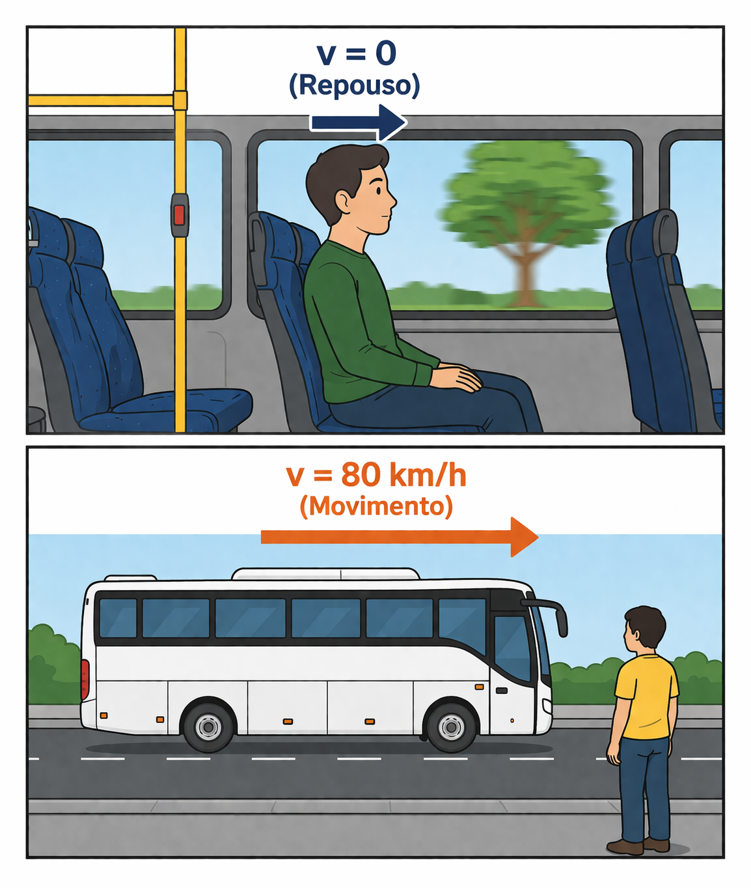
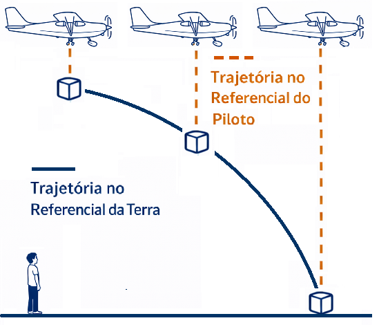
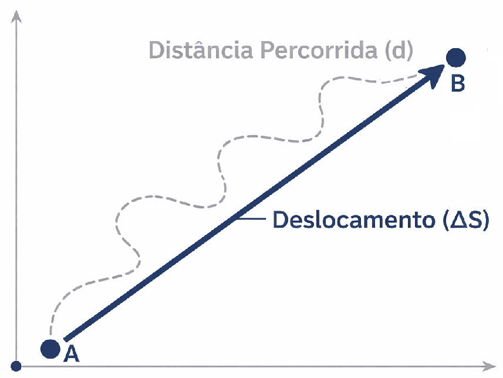
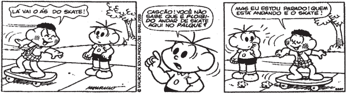
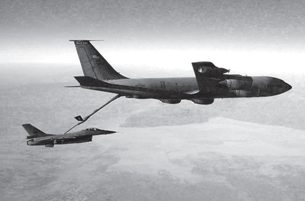
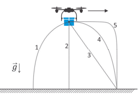
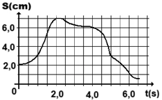

Peço desculpas pela falha! No processo de unificação do código com o modelo da Aula 10, acabei removendo a exibição visual das tags de imagem no corpo do texto explicativo.
Aqui está o código completo corrigido, mantendo todas as estruturas de código, os seletores JavaScript, os scripts de suporte ao passador de slides físico e, agora, as marcações e caminhos corretos para carregar todas as **Figuras** (`Figura 1`, `Figura 2` e `Figura 3`) e as imagens dos **Testes** (`T 11`, `T 12`, `T 13` e `T 15`) exatamente onde devem aparecer:
```html
1º Ano: Aula 03 - Introdução à Cinemática
FÍSICA EM
1º Ano | Aula 03: Introdução à Cinemática
📚 Resumo:
A Cinemática é o ramo da Física que estuda o movimento dos corpos sem se preocupar com as causas (forças) que os produzem.
1. Conceitos Relativos
Referencial: Corpo ou ponto em relação ao qual verificamos se há movimento.
Repouso: Quando a posição de um objeto não muda em relação ao referencial ao longo do tempo.
Movimento: Quando a posição muda em relação ao referencial ao longo do tempo.
2. Espaço e Trajetória
Ponto Material: Corpo cujas dimensões podem ser desprezadas no estudo do fenômeno.
Corpo Extenso: Corpo cujas dimensões são importantes para a análise do movimento.
Trajetória: Caminho percorrido pelo corpo. Ela depende diretamente do referencial adotado.
3. Deslocamento vs. Distância Percorrida
O deslocamento escalar ($\Delta S$) avalia apenas a variação da posição:
$$\Delta S = S_{\text{final}} - S_{\text{inicial}}$$
A distância percorrida ($d$) é a soma de todos os trechos andados, independentemente do sentido.
📖 Introdução à Cinemática
1. O que é Cinemática?
A Cinemática é o primeiro passo no estudo da Mecânica. Seu objetivo fundamental é descrever matematicamente e geometricamente como os objetos se movem. Se você diz que um carro trafega a 80 km/h rumo ao Norte, está fazendo uma descrição cinemática. Não importa se o motor é potente ou se há forças externas agindo; isso será objeto de estudo posterior na Dinâmica.
2. A Relatividade do Movimento e o Referencial
Nada no universo move-se ou está parado de forma absoluta. Tudo depende do ponto de observação, ou seja, do Referencial adotado.
Para definir se há movimento, fixamos um referencial e traçamos um sistema de coordenadas. Se as coordenadas da posição do objeto mudarem com o tempo, ele está em movimento naquele referencial; caso contrário, está em repouso.

Figura 1: O estado de movimento ou repouso depende do referencial escolhido (Passageiro parado em relação ao ônibus, mas em movimento em relação à estrada).
3. Ponto Material vs. Corpo Extenso
Na Física, simplificamos a representação dos objetos dependendo da escala do problema analisado:
Ponto Material (ou Partícula): Ocorre quando as dimensões do corpo são desprezíveis se comparadas às distâncias envolvidas no movimento. Exemplo: Um navio atravessando o Oceano Atlântico.
Corpo Extenso: Ocorre quando o tamanho do corpo é fundamental para entender o fenômeno. Exemplo: O mesmo navio manobrando para atracar em um canal estreito de um porto.
4. Posição (Espaço) e Trajetória
Para localizar um corpo, usamos a grandeza Espaço ($S$), que determina a coordenada do objeto sobre uma linha de trajetória pré-definida. A orientação dessa linha define se o sinal do espaço será positivo ou negativo.
A Trajetória é definida como o conjunto de todas as posições sucessivas ocupadas pelo corpo ao longo do tempo. Vale destacar que a forma geométrica da trajetória também varia conforme o referencial adotado.

Figura 2: A forma da trajetória depende do referencial de observação. (Curva parabólica vista da Terra vs. Linha vertical vista pelo piloto).
5. Deslocamento vs. Distância Percorrida
Estes dois termos possuem significados físicos estritamente distintos:
Deslocamento Escalar ($\Delta S$): Importa-se somente com a diferença matemática direta entre o ponto inicial e o ponto final. $$\Delta S = S_{\text{final}} - S_{\text{inicial}}$$
Distância Percorrida ($d$): É a grandeza escalar que computa a soma real de todo o caminho efetivamente percorrido pelo corpo.

Figura 3: Deslocamento avalia apenas o vetor/variação final (linha reta); a distância mede toda a extensão do percurso sinuoso.
💡 Física em Ação
🛰️ Satélites Geoestacionários
Eles orbitam acompanhando exatamente a velocidade angular de rotação da Terra. Do ponto de vista de uma antena parabólica fixada no chão de uma residência, o satélite está em repouso. Contudo, para um observador situado na Lua, o satélite move-se a milhares de quilômetros por hora.
🛣️ Marcos Quilométricos
As placas regulamentares localizadas às margens de uma rodovia (como "Km 45") não indicam a distância percorrida, mas representam a **Posição ($S$)** ou espaço instantâneo do veículo naquela trajetória, medida a partir de um marco inicial definido como zero ($S_0 = 0\text{ km}$).
✅ Questões Resolvidas (R 1 a 5)
R 1: Conceito de Referencial
Enunciado: Um passageiro sentado na poltrona de um ônibus que se desloca por uma rodovia a 80 km/h está em repouso ou em movimento?
Resolução:
O estado de repouso ou movimento depende diretamente do referencial adotado:
Em relação ao próprio ônibus (ou às poltronas ao redor), a posição do passageiro não se altera com o tempo, logo, ele está em repouso.
Em relação a elements fixados na estrada (como postes, árvores ou placas), sua posição muda continuamente, logo, ele está em movimento.
R 2: Ponto Material vs. Corpo Extenso
Enunciado: Um grande navio cargueiro de 300 metros de comprimento realizando uma travessia transatlântica pode ser considerado um ponto material?
Resolução:
Sim. No estudo de uma trajetória transatlântica, as distâncias percorridas chegam a milhares de quilômetros. Comparado a essa escala imensa, o comprimento de 300 metros do navio torna-se completamente insignificante e desprezível para o cálculo macroscópico da viagem, caracterizando-o perfeitamente como um ponto material.
R 3: Calculation de Deslocamento Escalar
Enunciado: Um carro parte do marco quilométrico 30 de uma rodovia, desloca-se a favor da numeração e chega ao marco quilométrico 145. Qual foi o seu deslocamento?
Resolução:
1. Identificação dos dados:
Posição inicial ($S_1$ ou $S_0$) = $30\text{ km}$
Posição final ($S_2$ ou $S_f$) = $145\text{ km}$
2. Aplicação da fórmula do deslocamento escalar:
$$
\begin{aligned}
\Delta S &= S_{\text{final}} - S_{\text{inicial}} \\
\Delta S &= 145 - 30 \\
\Delta S &= \mathbf{115\text{ km}}
\end{aligned}
$$
R 4: Trajetória e Dependência de Referencial
Enunciado: Um avião cargueiro voa horizontalmente com velocidade constante e solta um pacote de suprimentos. Desprezando a resistência do ar, descreva o formato da trajetória vista pelo piloto do próprio avião.
Resolução:
Como a resistência do ar é desprezada, por inércia horizontal, o pacote solto mantém exatamente a mesma velocidade para frente que o avião possui. Assim, o pacote cai permanecendo sempre na mesma linha vertical logo abaixo da aeronave. Portanto, para o piloto (referencial no avião), a trajetória observada será uma linha reta vertical para baixo.
R 5: Distância vs. Deslocamento
Enunciado: Um pedestre caminha em linha reta 120 metros para a direita e, em seguida, retorna 40 metros na mesma calçada para a esquerda. Determine o deslocamento escalar e a distância total percorrida.
Resolução:
Adotando a orientação positiva para a direita ($S_{\text{inicial}} = 0\text{ m}$):
Ele vai até a posição $120\text{ m}$.
Ao voltar $40\text{ m}$, sua posição final passa a ser: $S_{\text{final}} = 120 - 40 = 80\text{ m}$.
$$ d = 120\text{ m (ida)} + 40\text{ m (volta)} = \mathbf{160\text{ m}} $$
✍️ Questões Propostas (P 6 a 10)
P 6: Simultaneidade de Estados
Enunciado: Explique, fundamentado nos conceitos físicos aprendidos, se é possível que um mesmo corpo físico esteja em estado de repouso e movimento simultaneamente.
Resolução:
Sim, é perfeitamente possível. Como os estados de movimento e repouso não são absolutos e dependem da escolha do referencial, você pode estar neste momento imóvel (em repouso) se o referencial adotado for a cadeira da sua sala, mas estará se movendo a alta velocidade (em movimento) se o referencial adotado for o centro do Sol, em virtude dos movimentos orbitais do planeta Terra.
P 7: Posições Negativas
Enunciado: Uma partícula se move ao longo de uma reta orientada, partindo da posição $-15\text{ m}$ e parando na posição $+45\text{ m}$. Calcule o deslocamento escalar sofrido pela partícula.
Resolução:
1. Identificação dos dados:
$S_{\text{inicial}} = -15\text{ m}$
$S_{\text{final}} = +45\text{ m}$
2. Execução matemática:
$$
\begin{aligned}
\Delta S &= S_{\text{final}} - S_{\text{inicial}} \\
\Delta S &= 45 - (-15) \\
\Delta S &= 45 + 15 \\
\Delta S &= \mathbf{60\text{ m}}
\end{aligned}
$$
P 8: Enquadramento de Corpo Extenso
Enunciado: Forneça um exemplo prático cotidiano no qual um automóvel de passeio comum (de dimensões aproximadas de 4 metros) deva ser tratado obrigatoriamente como um corpo extenso.
Resolução:
Um exemplo clássico ocorre no momento em que o motorista tenta realizar uma manobra de baliza para estacionar o veículo em uma vaga apertada de shopping, ou ao transitar dentro de uma garagem residencial compacta. Nesses cenários, os 4 metros de comprimento do veículo são cruciais em comparação ao espaço total disponível, de modo que suas dimensões físicas não podem ser desprezadas sob risco de colisão.
P 9: Característica da Trajetória
Enunciado: É correto afirmar que a forma geométrica da trajetória traçada por um móvel é uma propriedade intrínseca e exclusiva do próprio objeto em movimento? Justifique.
Resolução:
Não, está incorreto. A trajetória não pertence exclusivamente ao objeto, pois sua forma geométrica depende intrinsecamente do referencial escolhido. Uma lâmpada que se desprende do teto de um vagão de trem em movimento parecerá cair descrevendo uma linha reta vertical para um passageiro sentado dentro deste trem, mas descreverá um arco parabólico para uma testemunha estática posicionada do lado de fora na plataforma da estação.
P 10: Retorno ao Ponto de Partida
Enunciado: Um atleta de alto rendimento dá uma volta completa e exata em torno de uma pista de atletismo perfeitamente circular que possui $400\text{ m}$ de extensão periférica. Determine o deslocamento escalar ($\Delta S$) e a distância total percorrida ($d$) ao término do ciclo.
Resolução:
Distância percorrida ($d$): Como o corredor percorreu toda a extensão linear da pista, a distância real contabilizada é de **$400\text{ m}$**.
Deslocamento escalar ($\Delta S$): Como se trata de uma volta completa, o ponto final de parada coincide com o ponto inicial de partida ($S_{\text{final}} = S_{\text{inicial}}$). Aplicando a definição: $\Delta S = S_{\text{final}} - S_{\text{inicial}} = \mathbf{0\text{ m}}$.
🎓 Testes (T 11 a 15)
T 11: (PUC-SP) Tirinha e Conceito de Movimento Relativo

Considere a famosa situação em que os personagens Cascão e Cebolinha estão andando juntos montados sobre um mesmo skate em movimento retilíneo uniforme em relação ao solo terrestre horizontal. Analise as seguintes afirmações:
I. Cascão encontra-se em movimento em relação ao skate e também em relação ao seu amigo Cebolinha. II. Cascão encontra-se em repouso em relação ao skate, mas encontra-se em movimento em relação ao solo. III. Em relação a um referencial astronômico fixado no centro do Sol, o Cascão jamais poderá ser considerado em estado de repouso absoluto.
Está(ão) correta(s):
A) apenas I.
B) apenas II.
C) apenas I e III.
D) apenas II e III.
E) I, II e III.
Resolução: Alternativa D.
• A afirmação I está incorreta porque a distância e posição de Cascão não se alteram em relação ao skate nem em relação a Cebolinha, logo ele está em repouso quanto a ambos.
• A afirmação II está correta: ele está parado em relação à base do skate, mas move-se em relação à calçada (solo).
• A afirmação III está correta: devido aos movimentos orbitais da Terra ao redor do Sol, qualquer corpo na Terra está em constante deslocamento espacial nesse referencial heliocêntrico.
T 12: (UNICENTRO) Operação de Reabastecimento Aéreo

Dois aviões militares de caça realizam uma complexa manobra de reabastecimento de combustível em pleno voo. Para que a operação seja executada com segurança, ambos mantêm rotas retilíneas paralelas, voando no mesmo sentido e exatamente com a mesma velocidade vetorial constante em relação ao solo.
Considerando as condições descritas, é correto afirmar que:
A) os aviões encontram-se em estado de repouso mútuo entre si.
B) não é possível definir um referencial que esteja em movimento.
C) os aviões estão obrigatoriamente em movimento um em relação ao outro.
D) o solo terrestre encontra-se em perfeito repouso para o piloto de um dos caças.
Resolução: Alternativa A.
Como os dois aviões se movem no mesmo sentido com velocidades de mesma intensidade, a distância relativa entre eles não sofre alterações ao longo do tempo. Consequentemente, para o piloto de um avião, o outro avião adjacente é visto como parado, configurando um estado de **repouso relativo** entre eles.
T 13: (FUVEST) Queda de Corpo Abandonado por Objeto Voador

Um drone de mapeamento topográfico voa em trajetória horizontal retilínea com velocidade constante em relação ao solo e deixa cair um pequeno pacote de calibração. Para um observador fixo posicionado estaticamente no solo terrestre, o desenho gráfico que melhor representa a trajetória de queda do pacote é:
A) Uma reta perfeitamente vertical para baixo.
B) Uma linha reta inclinada em diagonal para frente.
C) Um arco de parábola direcionado para a frente e para baixo.
D) Uma curva sinuosa.
E) Um arco circular invertido.
Resolução: Alternativa C.
Para um observador fixado no solo terrestre, o pacote combina dois movimentos simultâneos: o deslocamento horizontal por inércia (com a velocidade original que tinha no drone) e o movimento vertical acelerado de queda livre devido à gravidade. A composição de um movimento horizontal uniforme com um movimento vertical uniformemente variado resulta geometricamente em uma trajetória em formato de **arco parabólico**.
T 14: (Unitau-SP) Análise de Percurso de Ida e Volta
Um móvel em trânsito por uma rodovia retilínea parte inicialmente da marca do km 50, desloca-se progressivamente até atingir o km 60 e, imediatamente após, realiza uma manobra de retorno na pista, voltando até a marca do km 32, onde encerra o seu trajeto. O deslocamento escalar e a distância total percorrida são, respectivamente:
A) $18\text{ km}$ e $38\text{ km}$
B) $-18\text{ km}$ e $38\text{ km}$
C) $-18\text{ km}$ e $28\text{ km}$
D) $18\text{ km}$ e $28\text{ km}$
E) $-18\text{ km}$ e $18\text{ km}$
Trecho de Ida (do km 50 ao km 60) = $10\text{ km}$
Trecho de Volta (do km 60 ao km 32) = $60 - 32 = 28\text{ km}$
Total do percurso: $d = 10 + 28 = \mathbf{38\text{ km}}$
T 15: (Cesgranrio) Variação de Posição em Escala Escalar

Um pequeno inseto desloca-se sobre uma régua milimetrada. Em um instante inicial $t = 0\text{ s}$, ele se posiciona exatamente sobre a marca geométrica correspondente a $2,0\text{ cm}$. Após caminhar de forma oscilatória para frente e para trás, constata-se que no instante cronometrado de $t = 5,0\text{ s}$ ele se encontra sobre o ponto demarcado em $3,5\text{ cm}$. A variação de espaço (deslocamento escalar) deste móvel no intervalo de tempo descrito é igual a:
A) $0,5\text{ cm}$
B) $1,0\text{ cm}$
C) $1,5\text{ cm}$
D) $2,0\text{ cm}$
E) $5,5\text{ cm}$
Resolução: Alternativa C
Independentemente de quantas vezes o inseto tenha andado para a frente ou para trás ao longo dos 5 segundos, a variação de espaço (deslocamento escalar) mede exclusivamente a linha reta direta entre o ponto inicial e o ponto final:
$$
\begin{aligned}
\Delta S &= S_{\text{final}} - S_{\text{inicial}} \\
\Delta S &= 3,5\text{ cm} - 2,0\text{ cm} \\
\Delta S &= \mathbf{1,5\text{ cm}}
\end{aligned}
$$